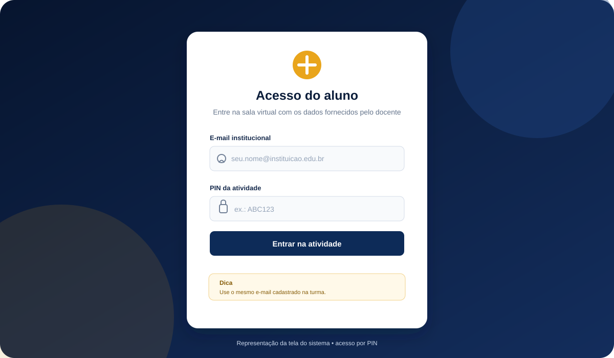
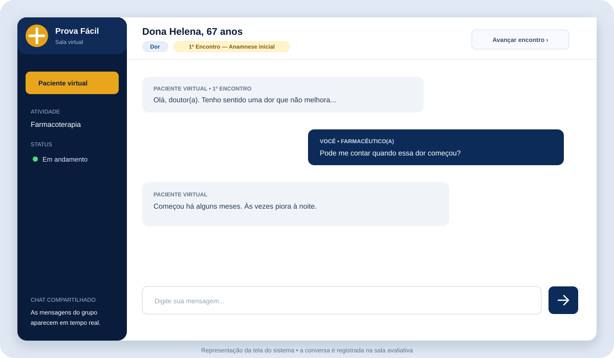
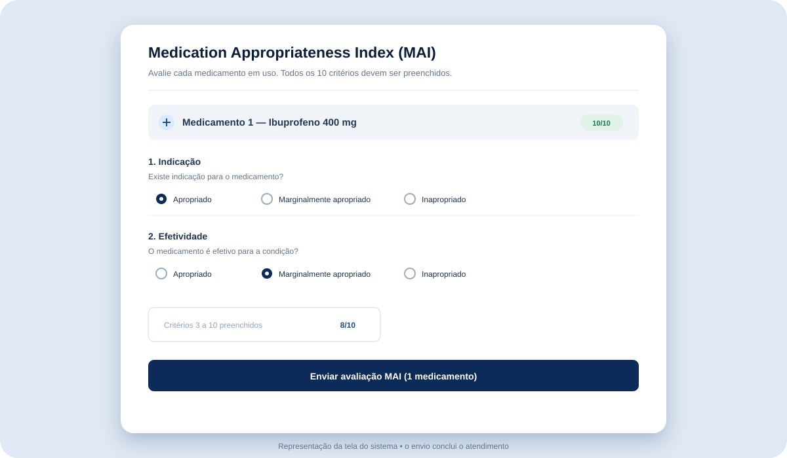
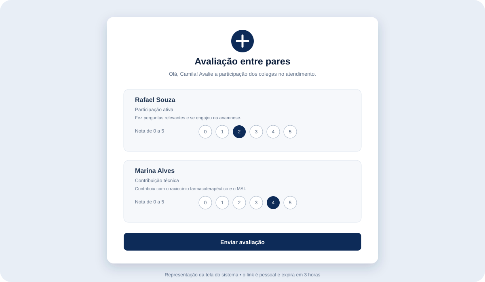
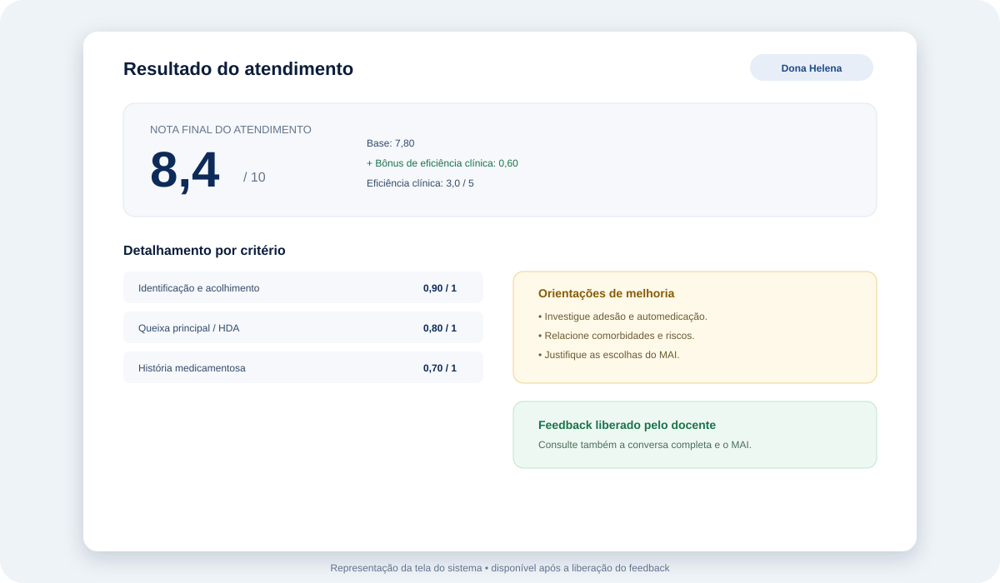

Acesse a sala
Informe o e-mail e o PIN fornecidos pelo docente. Escolha individual ou grupo quando a tela oferecer essa opção.
Guia do aluno · módulo 01
Este guia explica o acesso, a sala virtual, o cartão de cada encontro, os três encontros, a ficha de registro, a divisão de funções no grupo, o preenchimento do MAI, a avaliação entre pares e todos os componentes da nota.
Antes de começar
Você realizará um atendimento clínico simulado conversando com um paciente gerado por inteligência artificial. O seu papel (farmacêutico, enfermeiro ou médico) é definido pelo docente ao incluir o paciente na sala. O objetivo é demonstrar como você acolhe, investiga, organiza informações clínicas, raciocina sobre o tratamento e decide com segurança.
Durante a conversa, faça perguntas como faria em uma consulta real. O paciente responde de acordo com o caso clínico e pode fornecer informações sobre sintomas, medicamentos, hábitos, comorbidades, alergias e segurança.
Informe o e-mail e o PIN fornecidos pelo docente. Escolha individual ou grupo quando a tela oferecer essa opção.
Realize os três encontros, investigando o caso e tomando decisões coerentes com as informações obtidas.
Registre o que levantou na ficha e, no terceiro encontro, avalie os medicamentos no MAI. O envio do MAI encerra o atendimento.
Etapa 1
O acesso da atividade avaliativa é feito pela tela de acesso do aluno. Você precisa do PIN da sala e do e-mail que está cadastrado na turma.
Selecione o modo individual, informe seu e-mail institucional e o PIN da atividade. A sessão e a nota ficam vinculadas ao seu e-mail.
Selecione o modo grupo e informe o e-mail de cada integrante. Quando o grupo já estiver definido pelo docente, o sistema pode reconhecer essa configuração automaticamente.

“Pacientes Virtuais” dentro da plataforma pode abrir uma área de exploração para testar conversas. Essa área é efêmera e não gera nota. Para ser avaliado, entre pela sala com PIN.
Etapa 2
A sala é um chat clínico. No topo, você vê o nome do paciente, o módulo e o encontro atual. No centro, acompanha a conversa. Na parte inferior, escreve e envia suas mensagens.

Ao começar cada encontro, você lê um cartão no estilo OSCE: local, cenário, seu papel, com quem vai conversar, sua tarefa e o tempo sugerido. O cartão diz o que fazer, não o que perguntar. Depois, uma faixa no topo da sala lembra a tarefa e o botão Ver cartão reabre o texto completo.
Não há roteiro na tela. Sinais vitais, exames e os medicamentos que a pessoa trouxe só aparecem se você pedir ou disser que vai aferir. O valor medido aparece sem interpretação: quem interpreta é você. O cronômetro é só uma referência e nada é bloqueado quando o tempo acaba.
Etapa 3
A sala organiza a interação em três momentos. Você pode avançar quando entender que cumpriu o objetivo do encontro. Cada encontro tem um tipo e um interlocutor próprios, descritos no cartão.
Pacientes do novo formato
Você atende o paciente (ou o cuidador, quando é ele quem conta a história). Investigue a queixa, os medicamentos como são usados de fato, antecedentes, hábitos e contexto, e registre na ficha de anamnese.
Como interagir: escreva como se falasse com a pessoa. Ela só responde ao que for perguntado.
O interlocutor muda. Na Farmácia, você conversa com o médico prescritor (uma persona de IA) e comunica o que encontrou. Na Enfermagem, é a passagem de plantão em formato SBAR. Na Medicina, é a interconsulta ou a discussão de resultados.
Importante: na Farmácia você não prescreve. Você propõe o ajuste ao prescritor, orienta, define a monitorização, encaminha e indica apenas medicamentos isentos de prescrição ou protocolos. Seja objetivo, como em uma comunicação profissional, e registre na ficha (SBAR) o que foi combinado.
O paciente volta e a situação depende do que o prescritor aceitou no encontro anterior: se a sua proposta foi aceita, modificada ou recusada, o quadro seguirá de modo diferente. Verifique o que mudou e o que persiste.
Quando terminar: registre a evolução na ficha (SOAP) e, na Farmácia, preencha o MAI. O envio do MAI marca a atividade como concluída.
Pacientes do formato anterior
Conheça o paciente e caracterize a queixa principal: início, duração, intensidade, localização, fatores de melhora ou piora e sintomas associados.
Não deixe de investigar: medicamentos em uso, dose, posologia, adesão, automedicação, alergias e antecedentes.
Retome o caso como uma consulta de acompanhamento. Verifique resposta ao tratamento, eventos adversos, uso correto, adesão e mudanças no estado do paciente.
Procure problemas: interações, contraindicações, duplicidades, doses inadequadas e necessidades não atendidas.
Feche o plano de cuidado e registre o seu julgamento sobre cada medicamento no Medication Appropriateness Index.
Quando terminar: clique em “Preencher MAI”, revise os medicamentos e envie o formulário. O envio marca a atividade como concluída.
Novo formato
A ficha é o seu prontuário do atendimento. Ela fica ao lado do chat (botão Ficha), é salva automaticamente e acompanha os três encontros. Vale cerca de 20% da nota.
Quando o docente ativa essa opção, o grupo escolhe em cada encontro quem registra a ficha e quem conduz a conversa com o paciente. Quem registra edita a ficha e não escreve no chat; quem conduz escreve no chat e apenas lê a ficha. A primeira confirmação vale para o grupo todo e o botão Funções permite alterar no encontro atual.
Etapa 5
O MAI avalia a adequação de cada medicamento prescrito para aquele paciente. Você deve adicionar todos os medicamentos relevantes e preencher os 10 critérios para cada um.

Apropriado, Marginalmente apropriado ou Inapropriado. Escolha com base nas informações levantadas durante a anamnese e nos riscos e benefícios para aquele paciente.
Confira se todos os medicamentos relevantes foram incluídos. Se você esquecer um medicamento ou deixar um critério sem resposta, o sistema solicitará a correção antes do envio.
Etapa 6
A nota final é apresentada em uma escala de 0 a 10. A correção considera a qualidade da anamnese, a ficha de registro (novo formato), o uso do MAI, a segurança das decisões e, quando houver grupo, a contribuição individual percebida pelos colegas. A conta da nota base é feita pelo sistema, não pela IA.
| Componente | O que é observado | Novo formato | Formato anterior |
|---|---|---|---|
| Qualidade da anamnese | Identificação e acolhimento; queixa principal/HDA; história medicamentosa; antecedentes e comorbidades; hábitos e estilo de vida; escuta e raciocínio clínico. Parte da nota vem da cobertura das informações essenciais do caso. | 0–4 | 0–6 |
| Qualidade do MAI | Completude; coerência clínica; justificativa crítica; segurança do paciente. | 0–4 | 0–4 |
| Ficha de registro | Completude do registro, fidelidade à conversa e raciocínio e clareza. Ficha vazia vale zero. | 0–2 | não há |
| Penalidades de segurança | Erros críticos como ignorar alergia, aceitar medicamento contraindicado ou não identificar interação grave. | até −1,5 | até −1,5 |
| Bônus de comunicação | Comunicação especialmente empática e clara. Não há bônus por conversas longas. | até +0,5 | até +0,5 |
| Avaliação entre pares | Aplica-se às atividades em grupo e ajusta individualmente a nota de acordo com participação, contribuição técnica e colaboração. | −1,0 a +1,0 | −1,0 a +1,0 |
O resultado é limitado ao intervalo de 0 a 10. No resultado você também vê um indicador de eficiência clínica (0 a 5), que mede a cobertura dos pontos essenciais da anamnese. Ele é informativo e não soma pontos à nota.
Recomendar ou aceitar um medicamento inseguro pode gerar penalidade específica. Antes de concluir, verifique alergias, interações, gestação quando aplicável, função renal/hepática e riscos do paciente.
Somente em grupo · Etapa 7
Depois que o grupo enviar o MAI, cada integrante recebe um link pessoal por e-mail para avaliar os colegas. Essa etapa influencia a nota individual, não a nota compartilhada do atendimento.

Participação ativa: fez perguntas e se envolveu. Contribuição técnica: ajudou no raciocínio e no MAI. Colaboração: trabalhou de modo respeitoso e ativo.
O sistema calcula a média das avaliações recebidas e converte o resultado em um ajuste de até 1 ponto para mais ou para menos. As respostas individuais não são mostradas aos colegas avaliados.
Depois da atividade
A correção é gerada a partir do histórico da interação e do MAI. O professor pode revisar e liberar o feedback antes que ele apareça para os alunos.

Volte à tela de acesso do aluno e entre novamente com o PIN e o e-mail usados na atividade. Se o feedback já estiver liberado, o sistema encaminhará você para a tela de resultado.
Isso significa que a correção ainda não foi liberada pelo professor ou ainda está sendo processada. Tente novamente mais tarde; não é necessário refazer o atendimento.
Antes de sair da sala
Use esta lista para verificar se você completou todas as etapas importantes.
Dúvidas frequentes
Sim. A área de exploração permite conversar com pacientes e conhecer o comportamento do sistema, mas essa conversa não é salva e não gera nota. Para a avaliação, use a sala com PIN.
Na sala avaliativa, o histórico é registrado. Mesmo assim, evite sair durante a atividade sem orientação, pois o andamento do encontro e a sincronização do grupo dependem da conexão. Se a página recarregar, entre novamente com os mesmos dados.
Todos acompanham a mesma conversa em tempo real, mas é melhor combinar quem fará cada pergunta para evitar mensagens duplicadas ou um fluxo confuso. Se o docente ativou a divisão de funções, só quem conduz escreve no chat e só quem registra edita a ficha.
Na Farmácia, não. Você propõe o ajuste ao prescritor, orienta, define a monitorização, encaminha e indica apenas medicamentos isentos de prescrição ou protocolos. O que o prescritor aceitar muda o retorno do paciente no 3º encontro.
É melhor preencher durante cada encontro. A ficha é salva sozinha, mas uma ficha vazia zera esse componente e o registro precisa ser fiel ao que foi conversado.
Revise a anamnese antes de enviar. Se o medicamento não for incluído, a completude da avaliação poderá ser prejudicada. O formulário exige que os critérios dos medicamentos adicionados estejam completos, mas não substitui a conferência clínica do aluno.
Em atividades de grupo, ela faz parte da nota individual. Verifique o e-mail após o envio do MAI e responda dentro do prazo indicado no link.
Primeiro confira e-mail, PIN, conexão e modo de acesso. Se o problema persistir, registre uma captura de tela e procure o professor ou responsável pela atividade informando seu nome, turma e o horário do erro.